HDAnalyzeR is an R package developed to streamline and enhance proteomics analysis, particularly for biomarker selection from blood plasma samples. It is developed by and optimized to be used from Human Disease Blood Atlas group internally with Olink proteomics data. This vignette will guide you through the essential steps to use the package, from data loading and quality control to data cleaning, dimensionality reduction, and biomarker identification. Let’s get started by loading the package!
This document introduces you to HDAnalyzeR’s basic set of tools, and shows you how to analyze and identify biomarkers in a dataset of cancer blood plasma samples.
Loading the Data
First, we load the package’s example_data and
example_metadata.
head(example_data)
#> DAid Sample OlinkID UniProt Assay Panel NPX
#> 1 DA00001 AML_syn_1 OID21311 Q9BTE6 AARSD1 Oncology 3.3903461
#> 2 DA00001 AML_syn_1 OID21280 P00519 ABL1 Oncology 2.7588517
#> 3 DA00001 AML_syn_1 OID21269 P09110 ACAA1 Oncology 1.7070090
#> 4 DA00001 AML_syn_1 OID20159 P16112 ACAN Cardiometabolic 0.0332709
#> 5 DA00001 AML_syn_1 OID20105 Q9BYF1 ACE2 Cardiometabolic 1.7553590
#> 6 DA00001 AML_syn_1 OID20124 Q15067 ACOX1 Cardiometabolic -0.9192835
#> Assay_Warning QC_Warning PlateID
#> 1 PASS PASS Run001
#> 2 PASS PASS Run001
#> 3 PASS PASS Run001
#> 4 PASS PASS Run001
#> 5 PASS PASS Run001
#> 6 PASS PASS Run001
head(example_metadata)
#> DAid Sample Disease Stage Grade Sex Age BMI Cohort
#> 1 DA00001 AML_syn_1 AML 2 <NA> F 76 25.8 UCAN
#> 2 DA00002 AML_syn_2 AML Unknown <NA> M 55 23.7 UCAN
#> 3 DA00003 AML_syn_3 AML 2 <NA> F 51 33.2 UCAN
#> 4 DA00004 AML_syn_4 AML Unknown <NA> M 86 32.4 UCAN
#> 5 DA00005 AML_syn_5 AML 2 <NA> F 69 32.8 UCAN
#> 6 DA00006 AML_syn_6 AML Unknown <NA> M 88 29.5 UCAN📓 In real-world scenarios, you would load your own data and metadata files instead of using the example dataset. In order to run the package without issues, make sure that your data include the following columns: DAid, Assay and, NPX, while your metadata include the following columns: DAid and Disease. Also, if you have a Sex column in your metadata, the data should be encoded as M and F.
Quality Control (QC)
Data QC
qc_summary_data() provides a comprehensive summary of
the input dataset. It will check the column types, calculate the
percentage of NAs in each column and row, perform normality tests for
all the different Assays, calculate protein-protein correlations, and
create a heatmap of these correlations. Users can also specify the
threshold for reporting protein-protein correlations.
qc_data <- qc_summary_data(example_data, wide = FALSE, threshold = 0.7)
#> [1] "Summary:"
#> [1] "Note: In case of long output, only the first 10 rows are shown. To see the rest display the object with view()"
#> [1] "Number of samples: 586"
#> [1] "Number of variables: 100"
#> [1] "--------------------------------------"
#> [1] "character : 1"
#> [1] "numeric : 100"
#> [1] "--------------------------------------"
#> [1] "NA percentage in each column:"
#> # A tibble: 91 × 2
#> column na_percentage
#> <chr> <dbl>
#> 1 ACE2 6.1
#> 2 ACTA2 6.1
#> 3 ACTN4 6.1
#> 4 ADAM15 6.1
#> 5 ADAMTS16 6.1
#> 6 ADH4 6.1
#> 7 AKR1C4 6.1
#> 8 AMBN 6.1
#> 9 AMN 6.1
#> 10 AOC1 6.1
#> # ℹ 81 more rows
#> [1] "--------------------------------------"
#> [1] "NA percentage in each row:"
#> # A tibble: 144 × 2
#> DAid na_percentage
#> <chr> <dbl>
#> 1 DA00450 57.4
#> 2 DA00482 53.5
#> 3 DA00542 53.5
#> 4 DA00003 50.5
#> 5 DA00463 46.5
#> 6 DA00116 43.6
#> 7 DA00475 42.6
#> 8 DA00578 42.6
#> 9 DA00443 41.6
#> 10 DA00476 35.6
#> # ℹ 134 more rows
#> [1] "--------------------------------------"
#> [1] "Normality test results:"
#> # A tibble: 100 × 4
#> Protein p_value adj.P.Val is_normal
#> <chr> <dbl> <dbl> <lgl>
#> 1 ARID4B 2.00e-21 1.64e-19 FALSE
#> 2 ARTN 4.91e-21 1.64e-19 FALSE
#> 3 ATF2 4.01e-21 1.64e-19 FALSE
#> 4 AZU1 6.02e-20 1.51e-18 FALSE
#> 5 APBB1IP 1.64e-16 3.27e-15 FALSE
#> 6 ADA 2.81e-15 4.69e-14 FALSE
#> 7 ADCYAP1R1 5.75e-15 8.21e-14 FALSE
#> 8 AOC1 2.17e-14 2.71e-13 FALSE
#> 9 AREG 7.47e-14 8.30e-13 FALSE
#> 10 ADGRG1 1.39e-12 1.39e-11 FALSE
#> # ℹ 90 more rows
#> [1] "--------------------------------------"
#> [1] "Protein-protein correlations above 0.7:"
#> Protein1 Protein2 Correlation
#> 1 ATP5IF1 AIFM1 0.76
#> 2 AXIN1 ARHGEF12 0.76
#> 3 AIFM1 ATP5IF1 0.76
#> 4 ARHGEF12 AXIN1 0.76
#> 5 ARHGEF12 AIFM1 0.71
#> 6 AIFM1 ARHGEF12 0.71
#> [1] "--------------------------------------"
#> [1] "Correlation heatmap:"
#> [1] "--------------------------------------"
qc_data$heatmap
Metadata QC
qc_summary_metadata() summarizes quality control results
of the metadata dataframe. It checks the column types, calculates the
percentage of NAs in each column and row exactly as
qc_summary_data(), and creates summary visualizations for
key metadata variables such as Sex, Age, and BMI.
qc_summary_metadata(example_metadata, disease_palette = "cancers12")
#> [1] "Summary:"
#> [1] "Note: In case of long output, only the first 10 rows are shown. To see the rest display the object with view()"
#> [1] "Number of samples: 586"
#> [1] "Number of variables: 8"
#> [1] "--------------------------------------"
#> [1] "character : 7"
#> [1] "numeric : 2"
#> [1] "--------------------------------------"
#> [1] "NA percentage in each column:"
#> # A tibble: 1 × 2
#> column na_percentage
#> <chr> <dbl>
#> 1 Grade 91.5
#> [1] "--------------------------------------"
#> [1] "NA percentage in each row:"
#> # A tibble: 536 × 2
#> DAid na_percentage
#> <chr> <dbl>
#> 1 DA00001 11.1
#> 2 DA00002 11.1
#> 3 DA00003 11.1
#> 4 DA00004 11.1
#> 5 DA00005 11.1
#> 6 DA00006 11.1
#> 7 DA00007 11.1
#> 8 DA00008 11.1
#> 9 DA00009 11.1
#> 10 DA00010 11.1
#> # ℹ 526 more rows
#> [1] "--------------------------------------"
#> $na_percentage_col
#> # A tibble: 1 × 2
#> column na_percentage
#> <chr> <dbl>
#> 1 Grade 91.5
#>
#> $na_percentage_row
#> # A tibble: 536 × 2
#> DAid na_percentage
#> <chr> <dbl>
#> 1 DA00001 11.1
#> 2 DA00002 11.1
#> 3 DA00003 11.1
#> 4 DA00004 11.1
#> 5 DA00005 11.1
#> 6 DA00006 11.1
#> 7 DA00007 11.1
#> 8 DA00008 11.1
#> 9 DA00009 11.1
#> 10 DA00010 11.1
#> # ℹ 526 more rows
#>
#> $sex_barplot
#>
#> $age_dist_plot
#> Picking joint bandwidth of 6
#>
#> $bmi_dist_plot
#> Picking joint bandwidth of 1.82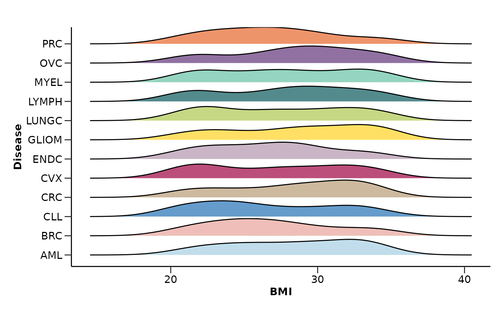
Data Cleaning
Data Cleaning
As we saw from the QC results, the data contains NAs and other issues
that need to be addressed. clean_data() preprocesses the
dataset by filtering out rows based on specified criteria. In this case
we will keep only the data which Assay_Warning is “PASS” and only DAid,
Assay and NPX columns.
clean_data <- clean_data(example_data,
keep_cols = c("DAid", "Assay", "NPX"),
filter_assay_warning = TRUE)
head(clean_data)
#> # A tibble: 6 × 3
#> DAid Assay NPX
#> <chr> <chr> <dbl>
#> 1 DA00001 AARSD1 3.39
#> 2 DA00001 ABL1 2.76
#> 3 DA00001 ACAA1 1.71
#> 4 DA00001 ACAN 0.0333
#> 5 DA00001 ACE2 1.76
#> 6 DA00001 ACOX1 -0.919Metadata Cleaning
In our case, clean_metadata() preprocesses the metadata
just by keeping only the specified columns.
clean_metadata <- clean_metadata(example_metadata,
keep_cols = c("DAid", "Disease", "Sex", "Age"))
head(clean_metadata)
#> # A tibble: 6 × 4
#> DAid Disease Sex Age
#> <chr> <chr> <chr> <dbl>
#> 1 DA00001 AML F 76
#> 2 DA00002 AML M 55
#> 3 DA00003 AML F 51
#> 4 DA00004 AML M 86
#> 5 DA00005 AML F 69
#> 6 DA00006 AML M 88Data Transformation
Once the data is cleaned, we recommend transforming it into a tidy
format (wide format) if it’s not already in that form.
generate_df() will create for us both the wide Olink
dataset as well as the joined with metadata dataset.
dfs <- generate_df(clean_data,
clean_metadata,
metadata_cols = c("DAid", "Disease", "Sex", "Age"),
save = FALSE)
wide_data <- dfs$wide_data
head(wide_data)
#> # A tibble: 6 × 101
#> DAid AARSD1 ABL1 ACAA1 ACAN ACE2 ACOX1 ACP5 ACP6 ACTA2 ACTN4
#> <chr> <dbl> <dbl> <dbl> <dbl> <dbl> <dbl> <dbl> <dbl> <dbl> <dbl>
#> 1 DA00001 3.39 2.76 1.71 0.0333 1.76 -0.919 1.54 2.15 2.81 0.742
#> 2 DA00002 1.42 1.25 NA -0.459 0.826 -0.902 0.647 1.30 0.798 -0.0659
#> 3 DA00003 NA NA NA 0.989 NA 0.330 1.37 NA NA NA
#> 4 DA00004 3.41 3.38 1.69 NA 1.52 NA 0.841 0.582 1.70 0.108
#> 5 DA00005 5.01 5.05 0.128 0.401 -0.933 -0.584 0.0265 1.16 2.73 0.350
#> 6 DA00006 6.83 1.18 -1.74 -0.156 1.53 -0.721 0.620 0.527 0.772 NA
#> # ℹ 90 more variables: ACY1 <dbl>, ADA <dbl>, ADA2 <dbl>, ADAM15 <dbl>,
#> # ADAM23 <dbl>, ADAMTS13 <dbl>, ADAMTS15 <dbl>, ADAMTS16 <dbl>,
#> # ADAMTS8 <dbl>, ADCYAP1R1 <dbl>, ADGRE2 <dbl>, ADGRE5 <dbl>, ADGRG1 <dbl>,
#> # ADGRG2 <dbl>, ADH4 <dbl>, AGER <dbl>, AGR2 <dbl>, AGR3 <dbl>, AGRN <dbl>,
#> # AGRP <dbl>, AGXT <dbl>, AHCY <dbl>, AHSP <dbl>, AIF1 <dbl>, AIFM1 <dbl>,
#> # AK1 <dbl>, AKR1B1 <dbl>, AKR1C4 <dbl>, AKT1S1 <dbl>, AKT3 <dbl>,
#> # ALCAM <dbl>, ALDH1A1 <dbl>, ALDH3A1 <dbl>, ALPP <dbl>, AMBN <dbl>, …
join_data <- dfs$join_data
head(join_data)
#> # A tibble: 6 × 104
#> DAid Disease Sex Age AARSD1 ABL1 ACAA1 ACAN ACE2 ACOX1 ACP5
#> <chr> <chr> <chr> <dbl> <dbl> <dbl> <dbl> <dbl> <dbl> <dbl> <dbl>
#> 1 DA00001 AML F 76 3.39 2.76 1.71 0.0333 1.76 -0.919 1.54
#> 2 DA00002 AML M 55 1.42 1.25 NA -0.459 0.826 -0.902 0.647
#> 3 DA00003 AML F 51 NA NA NA 0.989 NA 0.330 1.37
#> 4 DA00004 AML M 86 3.41 3.38 1.69 NA 1.52 NA 0.841
#> 5 DA00005 AML F 69 5.01 5.05 0.128 0.401 -0.933 -0.584 0.0265
#> 6 DA00006 AML M 88 6.83 1.18 -1.74 -0.156 1.53 -0.721 0.620
#> # ℹ 93 more variables: ACP6 <dbl>, ACTA2 <dbl>, ACTN4 <dbl>, ACY1 <dbl>,
#> # ADA <dbl>, ADA2 <dbl>, ADAM15 <dbl>, ADAM23 <dbl>, ADAMTS13 <dbl>,
#> # ADAMTS15 <dbl>, ADAMTS16 <dbl>, ADAMTS8 <dbl>, ADCYAP1R1 <dbl>,
#> # ADGRE2 <dbl>, ADGRE5 <dbl>, ADGRG1 <dbl>, ADGRG2 <dbl>, ADH4 <dbl>,
#> # AGER <dbl>, AGR2 <dbl>, AGR3 <dbl>, AGRN <dbl>, AGRP <dbl>, AGXT <dbl>,
#> # AHCY <dbl>, AHSP <dbl>, AIF1 <dbl>, AIFM1 <dbl>, AK1 <dbl>, AKR1B1 <dbl>,
#> # AKR1C4 <dbl>, AKT1S1 <dbl>, AKT3 <dbl>, ALCAM <dbl>, ALDH1A1 <dbl>, …📓 While HDAnalyzeR can work with long format data, most functions will transform it into a wide format, which can slightly slow down the pipeline. Thus, starting with tidy data is advisable.
Imputation and Dimensionality Reduction
Next, we will impute missing values using K-nearest neighbors (KNN)
with 3 neighbors via impute_knn().
imputed_data <- impute_knn(wide_data,
k = 3,
exclude_cols = c("DAid"),
show_na_percentage = FALSE)
head(imputed_data)
#> # A tibble: 6 × 101
#> DAid AARSD1 ABL1 ACAA1 ACAN ACE2 ACOX1 ACP5 ACP6 ACTA2 ACTN4
#> <chr> <dbl> <dbl> <dbl> <dbl> <dbl> <dbl> <dbl> <dbl> <dbl> <dbl>
#> 1 DA00001 3.39 2.76 1.71 0.0333 1.76 -0.919 1.54 2.15 2.81 0.742
#> 2 DA00002 1.42 1.25 -0.0721 -0.459 0.826 -0.902 0.647 1.30 0.798 -0.0659
#> 3 DA00003 3.80 2.82 2.35 0.989 -0.0218 0.330 1.37 0.561 1.34 0.737
#> 4 DA00004 3.41 3.38 1.69 0.262 1.52 1.86 0.841 0.582 1.70 0.108
#> 5 DA00005 5.01 5.05 0.128 0.401 -0.933 -0.584 0.0265 1.16 2.73 0.350
#> 6 DA00006 6.83 1.18 -1.74 -0.156 1.53 -0.721 0.620 0.527 0.772 0.229
#> # ℹ 90 more variables: ACY1 <dbl>, ADA <dbl>, ADA2 <dbl>, ADAM15 <dbl>,
#> # ADAM23 <dbl>, ADAMTS13 <dbl>, ADAMTS15 <dbl>, ADAMTS16 <dbl>,
#> # ADAMTS8 <dbl>, ADCYAP1R1 <dbl>, ADGRE2 <dbl>, ADGRE5 <dbl>, ADGRG1 <dbl>,
#> # ADGRG2 <dbl>, ADH4 <dbl>, AGER <dbl>, AGR2 <dbl>, AGR3 <dbl>, AGRN <dbl>,
#> # AGRP <dbl>, AGXT <dbl>, AHCY <dbl>, AHSP <dbl>, AIF1 <dbl>, AIFM1 <dbl>,
#> # AK1 <dbl>, AKR1B1 <dbl>, AKR1C4 <dbl>, AKT1S1 <dbl>, AKT3 <dbl>,
#> # ALCAM <dbl>, ALDH1A1 <dbl>, ALDH3A1 <dbl>, ALPP <dbl>, AMBN <dbl>, …After imputation, we will run Principal Component Analysis (PCA) via
do_pca() and Uniform Manifold Approximation and Projection
(UMAP) via do_umap() to check for outliers, batch effects,
and other potential issues.
do_pca(imputed_data,
clean_metadata,
color = "Sex",
palette = "sex_hpa",
impute = FALSE,
pcs = 6)
#> $pca_res
#> # A tibble: 586 × 6
#> DAid PC1 PC2 PC3 PC4 PC5
#> <fct> <dbl> <dbl> <dbl> <dbl> <dbl>
#> 1 DA00001 -3.79 -4.41 2.33 3.31 2.75
#> 2 DA00002 4.01 -2.65 -1.75 0.574 4.58
#> 3 DA00003 -3.63 4.74 -1.18 -1.08 0.580
#> 4 DA00004 -4.88 0.380 -1.29 -0.190 1.21
#> 5 DA00005 -5.11 -3.60 -0.964 5.06 1.42
#> 6 DA00006 0.324 -0.0404 1.93 7.86 -0.754
#> 7 DA00007 -11.0 -3.00 0.581 0.954 1.78
#> 8 DA00008 2.64 -2.17 -2.76 0.167 0.928
#> 9 DA00009 -1.82 -0.479 -3.04 2.59 2.69
#> 10 DA00010 3.64 0.900 -0.306 -1.43 2.89
#> # ℹ 576 more rows
#>
#> $loadings
#> # A tibble: 10,000 × 4
#> Assay Value PC id
#> <chr> <dbl> <chr> <chr>
#> 1 AARSD1 -0.135 PC1 pca_EoYnc
#> 2 ABL1 -0.199 PC1 pca_EoYnc
#> 3 ACAA1 -0.160 PC1 pca_EoYnc
#> 4 ACAN 0.0128 PC1 pca_EoYnc
#> 5 ACE2 -0.0585 PC1 pca_EoYnc
#> 6 ACOX1 -0.137 PC1 pca_EoYnc
#> 7 ACP5 -0.0613 PC1 pca_EoYnc
#> 8 ACP6 -0.0945 PC1 pca_EoYnc
#> 9 ACTA2 -0.0764 PC1 pca_EoYnc
#> 10 ACTN4 -0.0433 PC1 pca_EoYnc
#> # ℹ 9,990 more rows
#>
#> $pca_plot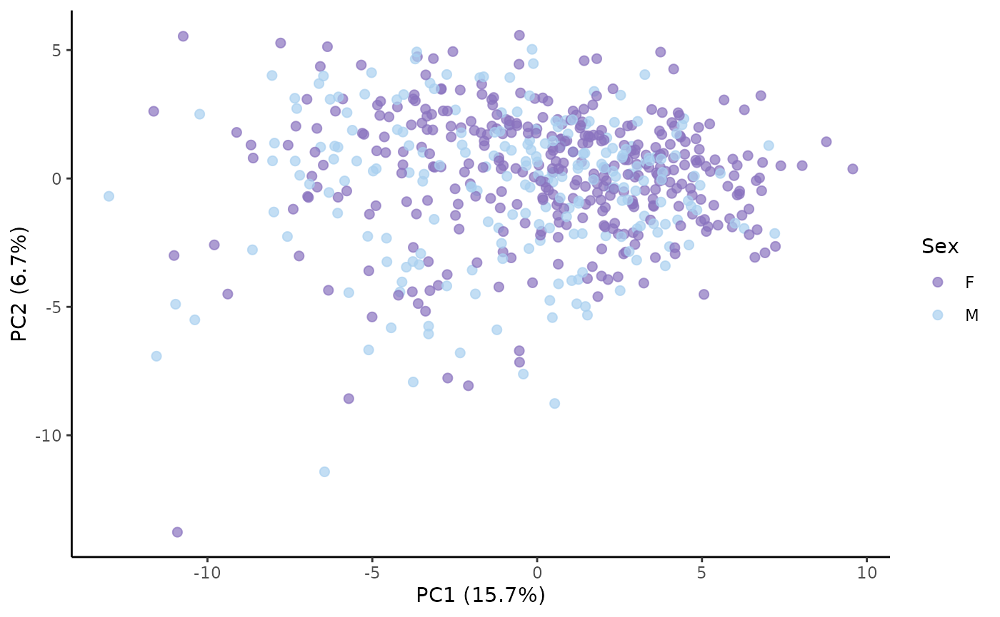
#>
#> $loadings_plot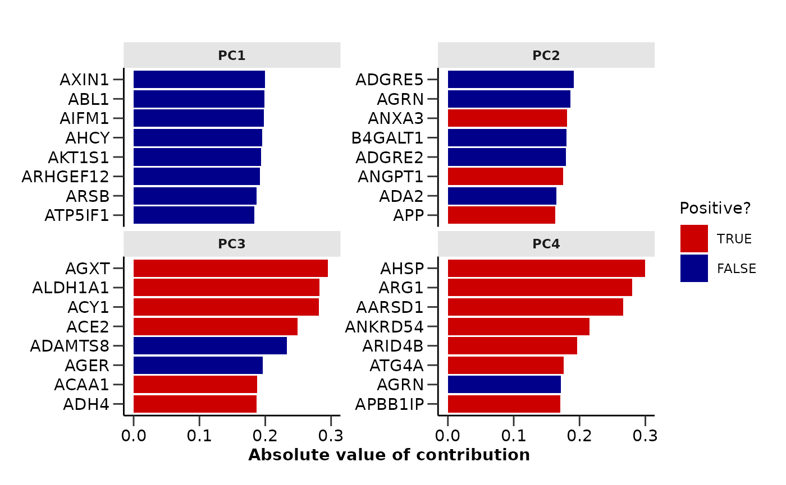
do_umap(imputed_data,
clean_metadata,
color = "Disease",
palette = "cancers12",
impute = FALSE)
#> $umap_res
#> # A tibble: 586 × 3
#> DAid UMAP1 UMAP2
#> <fct> <dbl> <dbl>
#> 1 DA00001 2.48 0.474
#> 2 DA00002 -2.46 -0.712
#> 3 DA00003 2.13 -1.71
#> 4 DA00004 2.34 -1.48
#> 5 DA00005 2.68 0.564
#> 6 DA00006 -1.38 1.95
#> 7 DA00007 3.50 -0.563
#> 8 DA00008 -1.77 -1.25
#> 9 DA00009 1.19 -1.91
#> 10 DA00010 -2.79 -0.787
#> # ℹ 576 more rows
#>
#> $umap_plot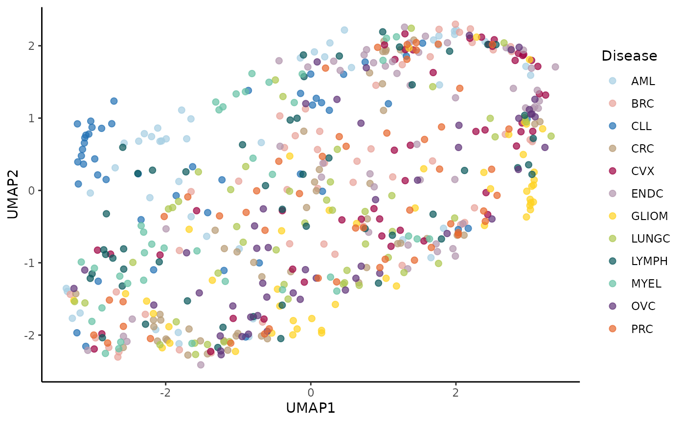
We will perform another QC check to ensure that everything is as expected after cleaning and imputing the data.
qc_data <- qc_summary_data(imputed_data, wide = TRUE, threshold = 0.7)
#> [1] "Summary:"
#> [1] "Note: In case of long output, only the first 10 rows are shown. To see the rest display the object with view()"
#> [1] "Number of samples: 586"
#> [1] "Number of variables: 100"
#> [1] "--------------------------------------"
#> [1] "character : 1"
#> [1] "numeric : 100"
#> [1] "--------------------------------------"
#> [1] "NA percentage in each column:"
#> # A tibble: 0 × 2
#> # ℹ 2 variables: column <chr>, na_percentage <dbl>
#> [1] "--------------------------------------"
#> [1] "NA percentage in each row:"
#> # A tibble: 0 × 2
#> # ℹ 2 variables: DAid <chr>, na_percentage <dbl>
#> [1] "--------------------------------------"
#> [1] "Normality test results:"
#> # A tibble: 100 × 4
#> Protein p_value adj.P.Val is_normal
#> <chr> <dbl> <dbl> <lgl>
#> 1 ARID4B 1.88e-22 1.88e-20 FALSE
#> 2 ATF2 5.93e-22 2.97e-20 FALSE
#> 3 ARTN 8.96e-22 2.99e-20 FALSE
#> 4 AZU1 6.28e-20 1.57e-18 FALSE
#> 5 APBB1IP 2.09e-17 4.17e-16 FALSE
#> 6 ADA 1.77e-15 2.95e-14 FALSE
#> 7 ADCYAP1R1 4.75e-15 6.78e-14 FALSE
#> 8 AOC1 6.02e-15 7.53e-14 FALSE
#> 9 AREG 1.67e-14 1.85e-13 FALSE
#> 10 ACE2 4.76e-13 4.76e-12 FALSE
#> # ℹ 90 more rows
#> [1] "--------------------------------------"
#> [1] "Protein-protein correlations above 0.7:"
#> Protein1 Protein2 Correlation
#> 1 AXIN1 ARHGEF12 0.76
#> 2 ARHGEF12 AXIN1 0.76
#> 3 ATP5IF1 AIFM1 0.75
#> 4 AIFM1 ATP5IF1 0.75
#> 5 ARHGEF12 AIFM1 0.72
#> 6 AIFM1 ARHGEF12 0.72
#> [1] "--------------------------------------"
#> [1] "Correlation heatmap:"
#> [1] "--------------------------------------"
qc_data$heatmap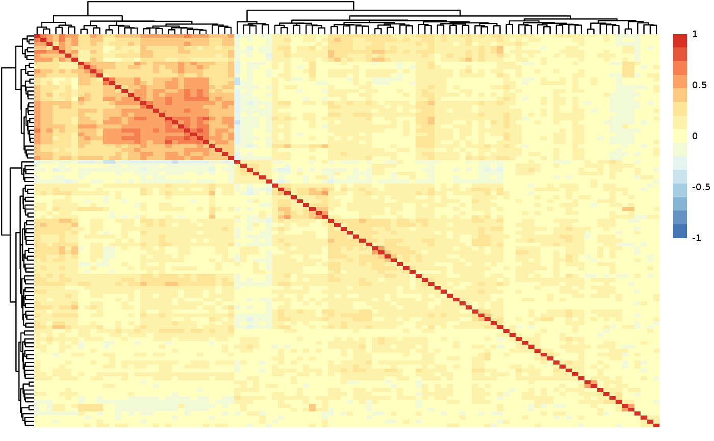
qc_summary_metadata(clean_metadata, disease_palette = "cancers12")
#> [1] "Summary:"
#> [1] "Note: In case of long output, only the first 10 rows are shown. To see the rest display the object with view()"
#> [1] "Number of samples: 586"
#> [1] "Number of variables: 3"
#> [1] "--------------------------------------"
#> [1] "character : 3"
#> [1] "numeric : 1"
#> [1] "--------------------------------------"
#> [1] "NA percentage in each column:"
#> # A tibble: 0 × 2
#> # ℹ 2 variables: column <chr>, na_percentage <dbl>
#> [1] "--------------------------------------"
#> [1] "NA percentage in each row:"
#> # A tibble: 0 × 2
#> # ℹ 2 variables: DAid <chr>, na_percentage <dbl>
#> [1] "--------------------------------------"
#> $na_percentage_col
#> # A tibble: 0 × 2
#> # ℹ 2 variables: column <chr>, na_percentage <dbl>
#>
#> $na_percentage_row
#> # A tibble: 0 × 2
#> # ℹ 2 variables: DAid <chr>, na_percentage <dbl>
#>
#> $sex_barplot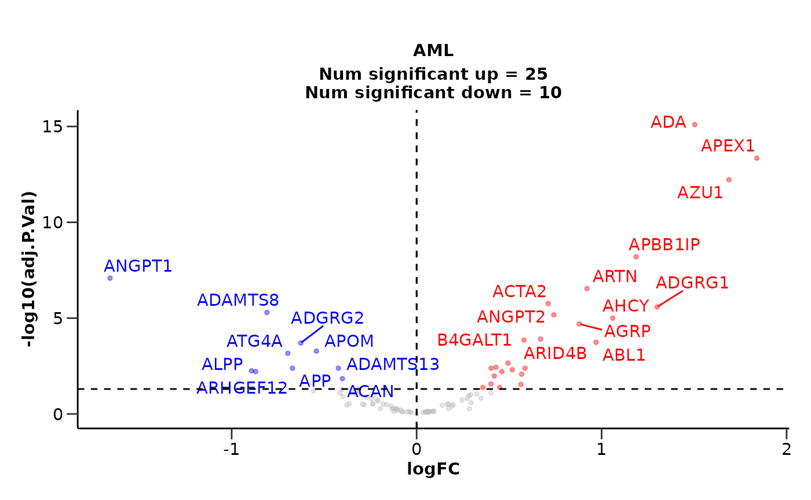
#>
#> $age_dist_plot
#> Picking joint bandwidth of 6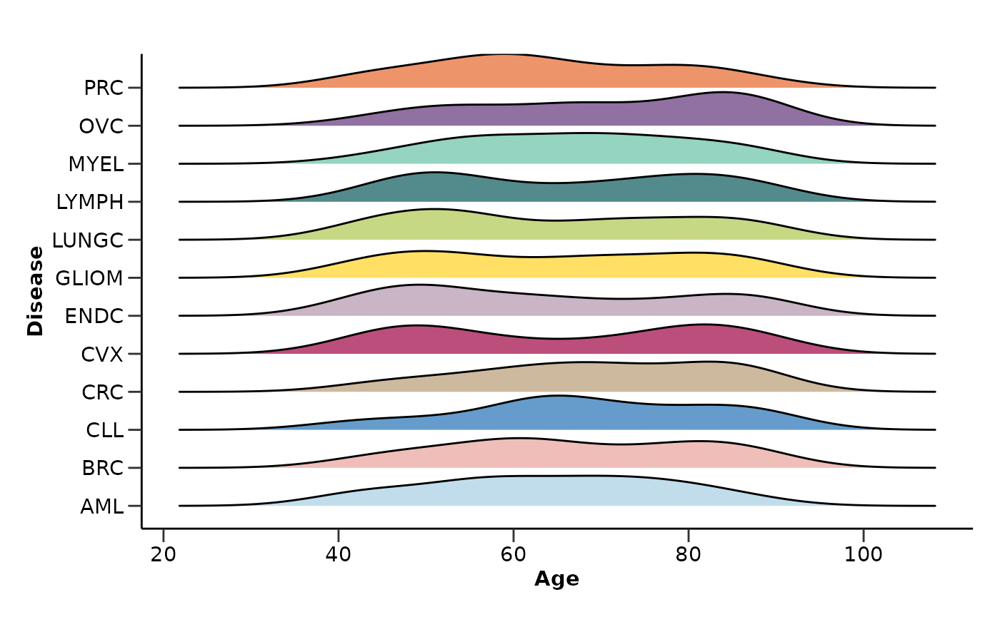
#>
#> $bmi_dist_plot
#> NULLBiomarker Identification
Differential Expression Analysis
We will run a differential expression analysis to identify potential
biomarkers. We will use do_limma() so that we will be able
to correct also for Age. This method will help us pinpoint proteins that
are significantly different between conditions. We will present only the
results for AML (Acute Myeloid Leukemia).
de_res <- do_limma(imputed_data,
clean_metadata,
correct = c("Sex", "Age"),
correct_type = c("factor", "numeric"),
only_female = c("BRC", "OVC", "CVX", "ENDC"),
only_male = "PRC")
de_res$de_results$AML
#> # A tibble: 100 × 11
#> Assay logFC CI.L CI.R AveExpr t P.Value adj.P.Val B Disease
#> <chr> <dbl> <dbl> <dbl> <dbl> <dbl> <dbl> <dbl> <dbl> <chr>
#> 1 AZU1 1.57 1.27 1.87 0.230 10.3 5.75e-23 5.75e-21 41.3 AML
#> 2 ADA 1.40 1.12 1.68 0.926 9.83 3.06e-21 1.53e-19 37.3 AML
#> 3 APBB1IP 1.15 0.859 1.44 -0.250 7.82 2.49e-14 8.28e-13 21.7 AML
#> 4 APEX1 1.44 1.07 1.81 0.521 7.56 1.49e-13 3.73e-12 19.9 AML
#> 5 ANGPT1 -1.66 -2.12 -1.20 1.72 -7.12 3.10e-12 6.19e-11 16.9 AML
#> 6 ARTN 0.845 0.589 1.10 0.420 6.48 1.91e-10 3.18e- 9 12.9 AML
#> 7 ADGRG1 1.15 0.792 1.50 1.53 6.37 3.86e-10 5.52e- 9 12.2 AML
#> 8 ANGPT2 0.693 0.439 0.947 0.912 5.36 1.20e- 7 1.50e- 6 6.61 AML
#> 9 AGRP 0.736 0.438 1.03 0.0232 4.85 1.59e- 6 1.76e- 5 4.14 AML
#> 10 APP -0.789 -1.11 -0.464 1.16 -4.77 2.37e- 6 2.37e- 5 3.74 AML
#> # ℹ 90 more rows
#> # ℹ 1 more variable: sig <chr>
de_res$volcano_plots$AML
#> Warning: ggrepel: 10 unlabeled data points (too many overlaps). Consider
#> increasing max.overlaps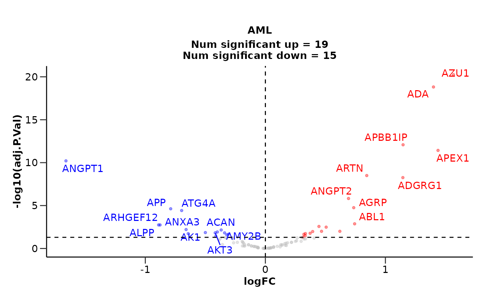
We can also summarize the results via
plot_de_summary().
plot_de_summary(de_res, disease_palette = "cancers12")
#> $de_barplot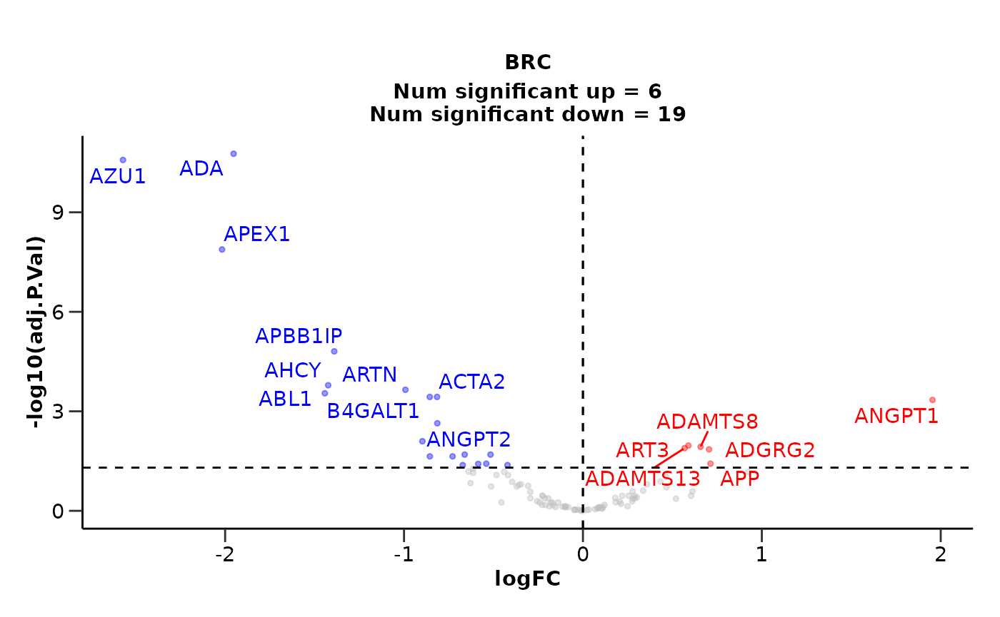
#>
#> $upset_plot_up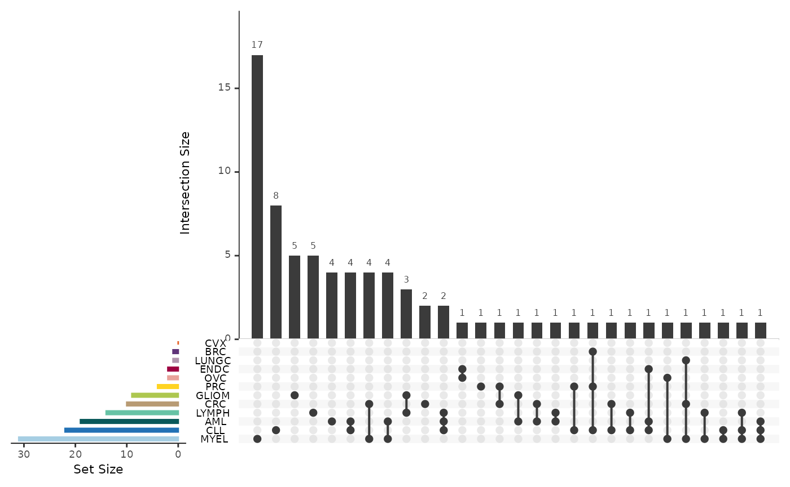
#>
#> $upset_plot_down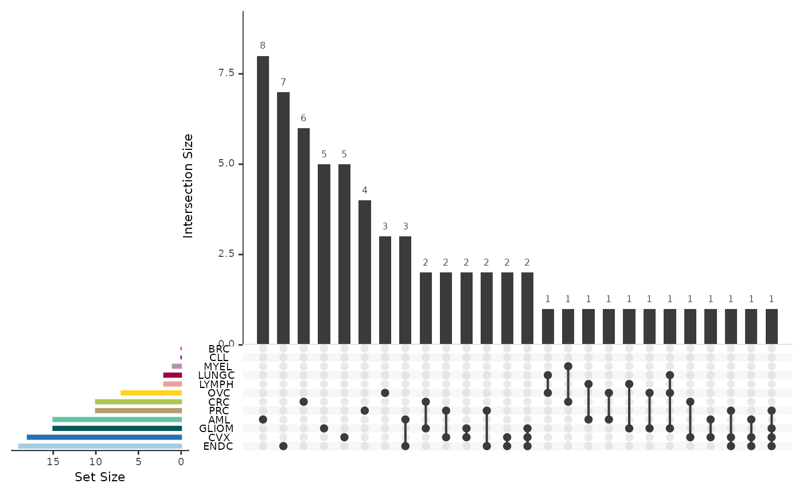
Lasso Machine Learning Classification Model
In addition to differential expression analysis, we will use a Lasso machine learning classification model to identify significant features. This model will help us understand which proteins are most predictive of the conditions being studied. We will present only the results for AML.
lasso_res <- do_elnet(imputed_data,
clean_metadata,
only_female = c("BRC", "OVC", "CVX", "ENDC"),
only_male = "PRC",
exclude_cols = c("Sex", "Age"),
type = "lasso",
palette = "cancers12",
subtitle = c("accuracy",
"sensitivity",
"specificity",
"auc",
"features",
"top-features"),
nfeatures = 12,
points = FALSE)
#> Joining with `by = join_by(DAid)`
#> Warning: Too little data to stratify.
#> • Resampling will be unstratified.
#> Sets and groups are ready. Model fitting is starting...
#> Classification model for AML is starting...
#> Classification model for BRC is starting...
#> Classification model for CLL is starting...
#> Classification model for CRC is starting...
#> Classification model for CVX is starting...
#> Classification model for ENDC is starting...
#> Classification model for GLIOM is starting...
#> Classification model for LUNGC is starting...
#> Classification model for LYMPH is starting...
#> Classification model for MYEL is starting...
#> Classification model for OVC is starting...
#> Classification model for PRC is starting...
lasso_res$AML$hypopt_res$hypopt_vis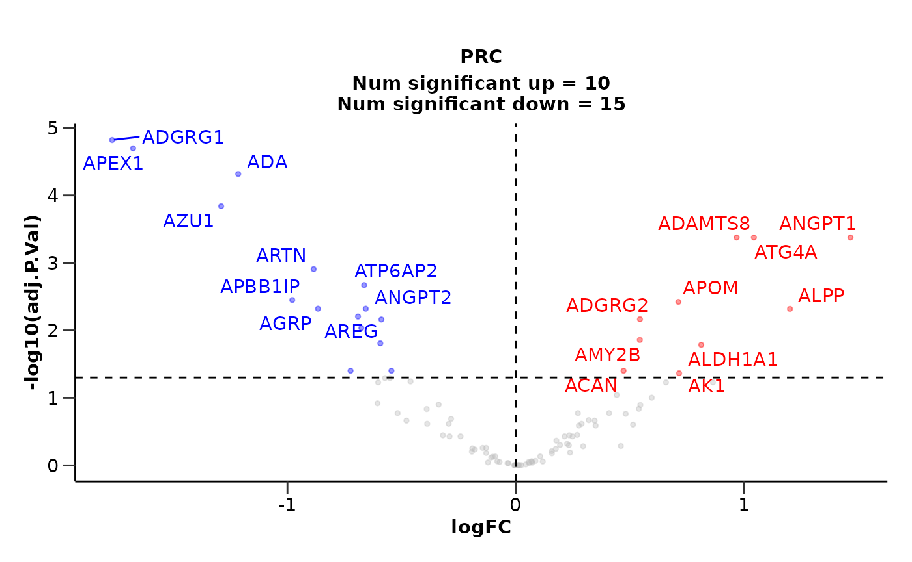
lasso_res$AML$testfit_res$metrics
#> $accuracy
#> [1] 0.82
#>
#> $sensitivity
#> [1] 0.77
#>
#> $specificity
#> [1] 0.92
#>
#> $auc
#> [1] 0.96
#>
#> $conf_matrix
#> Truth
#> Prediction 0 1
#> 0 17 1
#> 1 5 11
#>
#> $roc_curve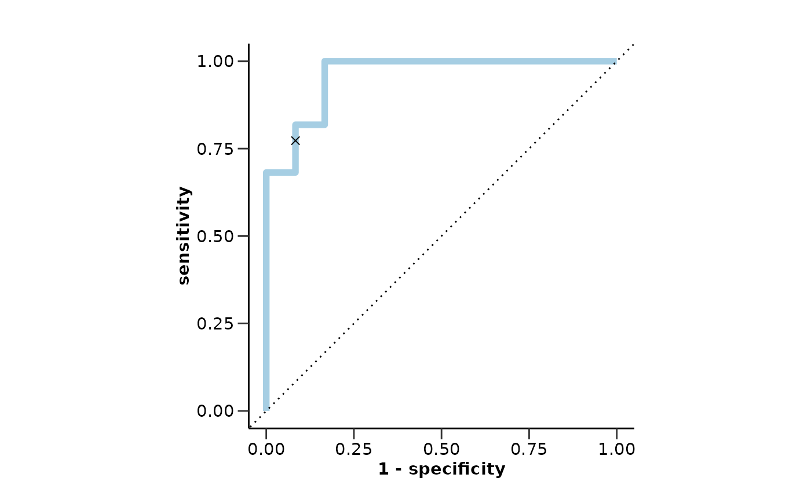
lasso_res$AML$var_imp_res$features
#> # A tibble: 36 × 4
#> Variable Importance Sign Scaled_Importance
#> <fct> <dbl> <chr> <dbl>
#> 1 ANGPT1 3.76 NEG 100
#> 2 ADGRG1 2.31 POS 61.5
#> 3 ARSB 1.52 POS 40.5
#> 4 ADAMTS16 1.33 NEG 35.3
#> 5 ARNT 1.28 POS 34.1
#> 6 ADA 1.24 POS 32.9
#> 7 AGXT 1.14 NEG 30.2
#> 8 ARTN 1.13 POS 30.1
#> 9 ADAM8 1.09 NEG 29.1
#> 10 AARSD1 1.06 POS 28.2
#> # ℹ 26 more rows
lasso_res$AML$var_imp_res$var_imp_plot
lasso_res$AML$boxplot_res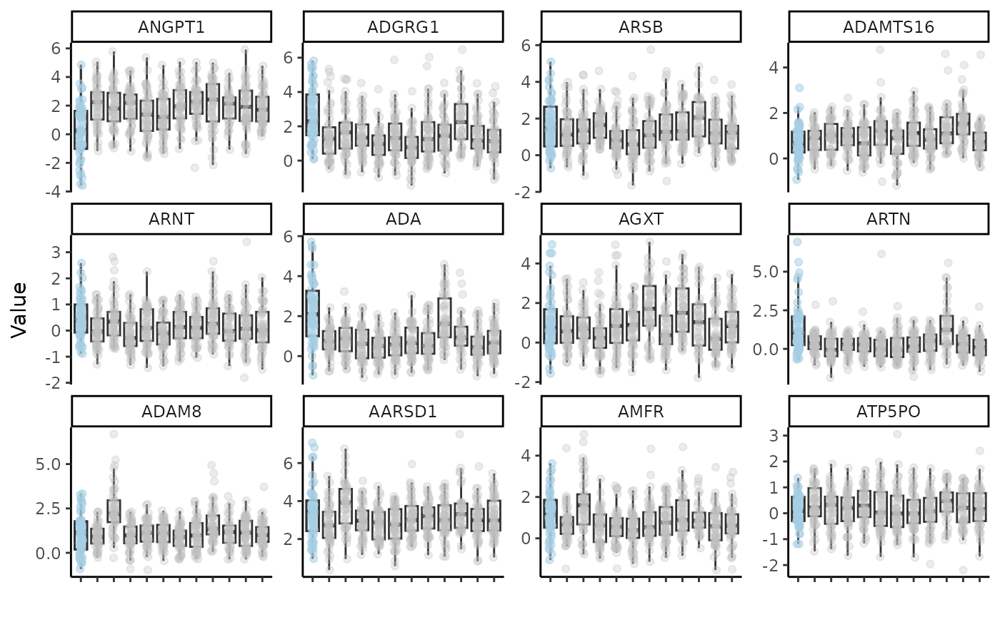
We can get a visual summary of the results via
plot_features_summary() too.
plot_features_summary(lasso_res, disease_palette = "cancers12")
#> $features_barplot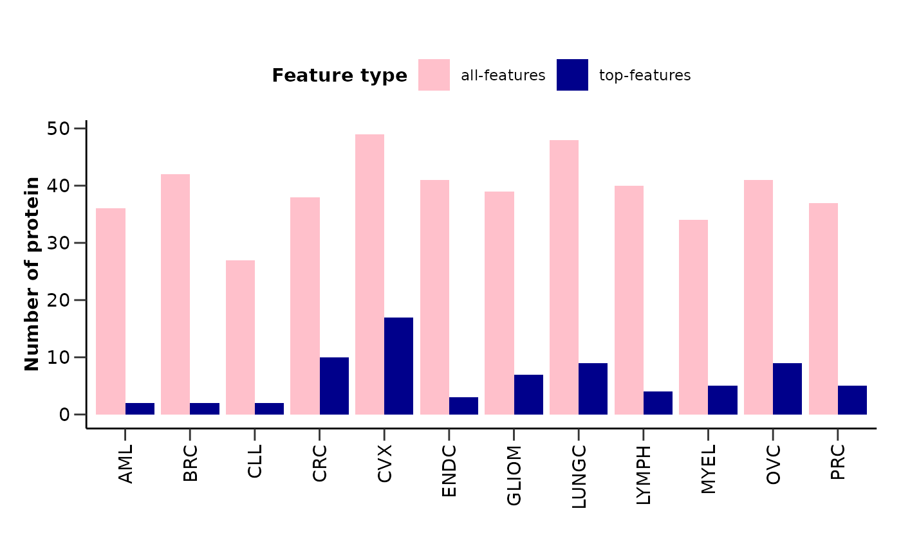
#>
#> $upset_plot_features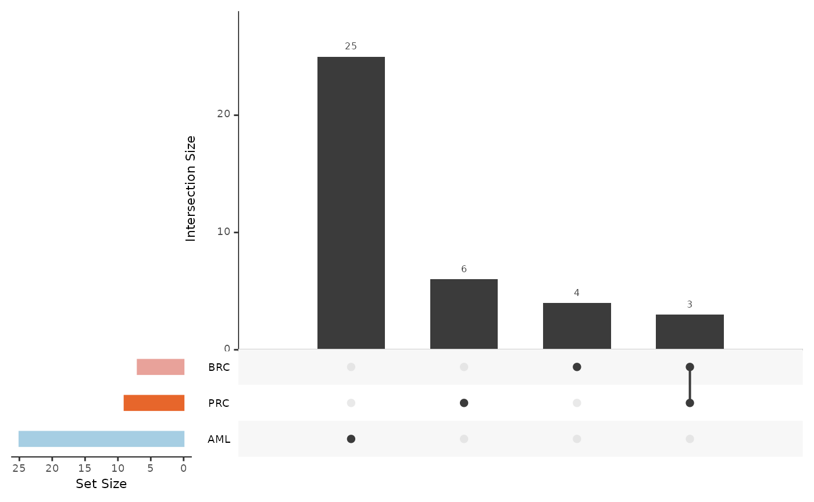